Cybersecurity
Hands-on work across digital forensics, network traffic analysis, Linux systems, web security, binary exploitation, and cryptography through university labs, public challenges, and the NSA Codebreaker Challenge.
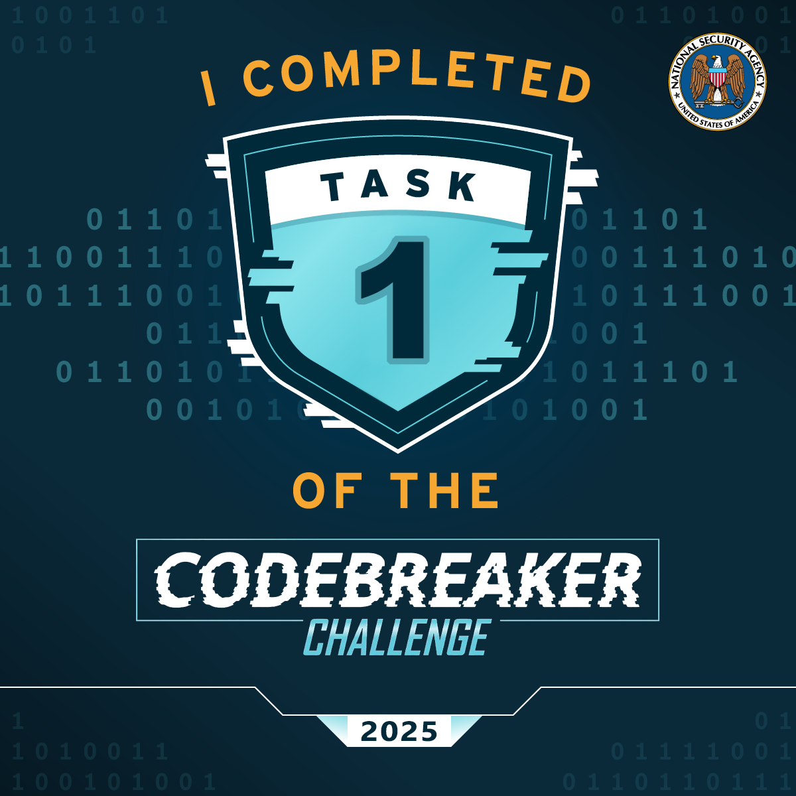
01
Applied security practice
This page documents educational security work rather than professional penetration testing. The focus is on the investigative process: examining artifacts, interpreting packets, identifying attack techniques, and using evidence to reach a defensible conclusion.
02
Digital forensics
NSA Codebreaker Challenge
Completed introductory challenge work involving a Linux EXT2 filesystem image, suspicious artifact discovery, and SHA-1 verification in a simulated incident-response scenario.
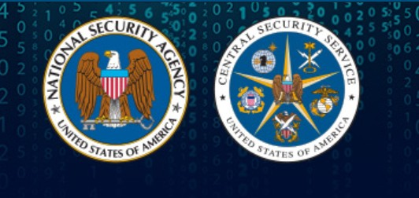
Evidence-driven filesystem analysis
The challenge required inspecting a provided disk image, locating an anomalous artifact, and submitting the artifact's cryptographic hash. This reinforced a methodical workflow: preserve the source, enumerate files and metadata, isolate suspicious evidence, and verify findings.
- Linux filesystem inspection
- Suspicious artifact identification
- Hash-based evidence validation
- Incident-response documentation
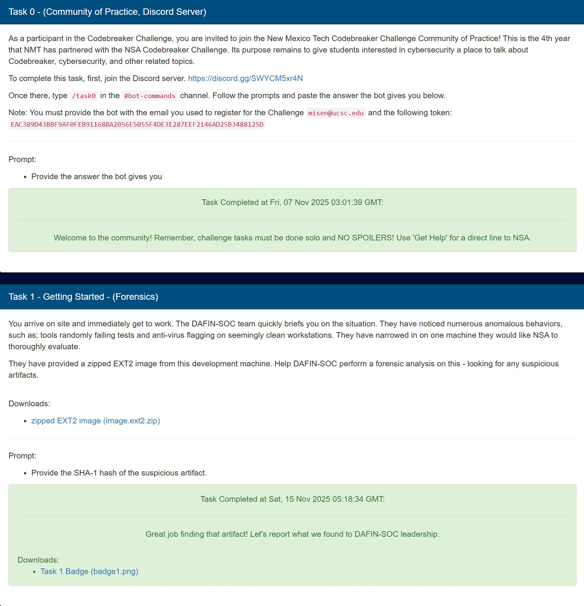
03
Network forensics
Packet and protocol analysis
University exercises used Wireshark and tshark to analyze PCAP files, fingerprint systems, inspect protocol behavior, and recover evidence from cleartext and authentication traffic.
Working at the packet level
The lab covered browser and operating-system fingerprinting, HTTP headers, TCP/IP characteristics, FTP credential exposure, DB2/DRDA traffic, and Kerberos AS-REP material. The work emphasized filters, packet reconstruction, protocol fields, and careful interpretation rather than automated answers.
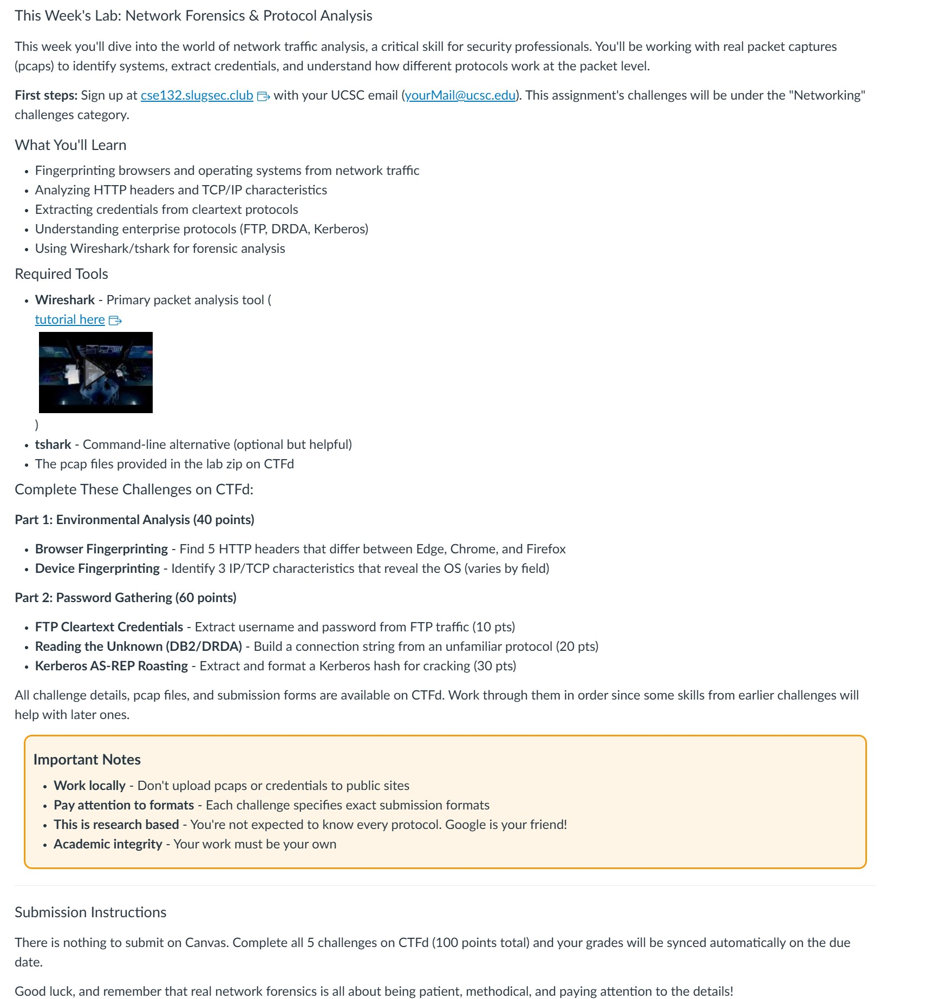
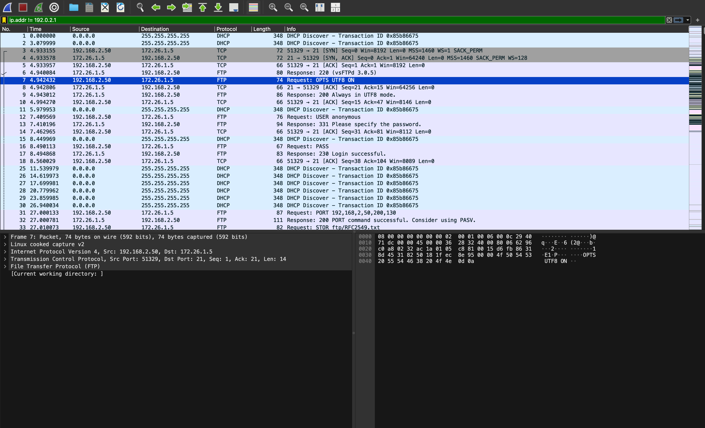
04
CTF laboratory
CyLab Security Academy
Guided picoCTF exercises mapped practical challenges to digital forensics, web exploitation, memory corruption, Linux permissions, remote services, and MITRE ATT&CK concepts.
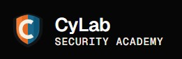
Completed challenge set
Ten assigned challenges were completed across forensics, cryptography, binary exploitation, web exploitation, and general Linux skills.
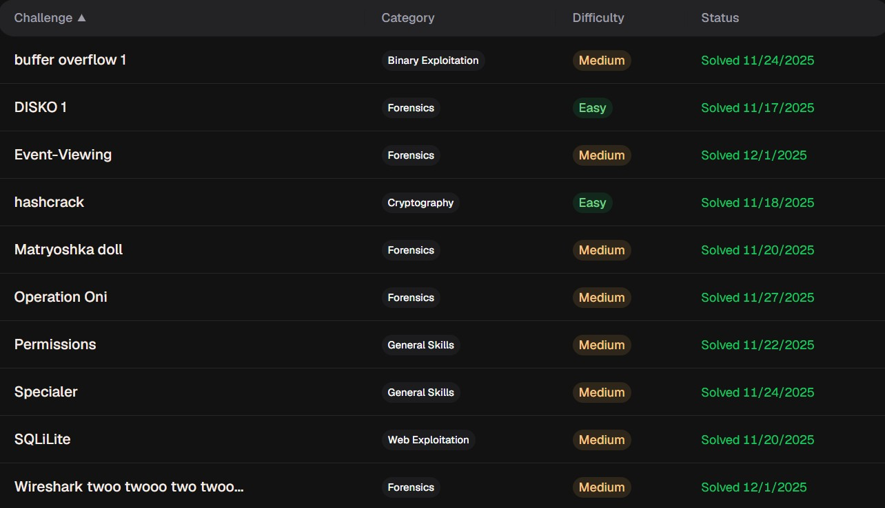
05
Image forensics
Recovering hidden information
Two challenge examples involved reasoning about image data rather than treating an image as a flat visual file.
Channel comparison and visual recovery
A noisy image concealed meaningful content. Comparing and transforming image data revealed a readable result, illustrating how information can be distributed across channels or obscured by pixel-level noise.
The portfolio shows the before-and-after evidence without publishing the challenge answer.
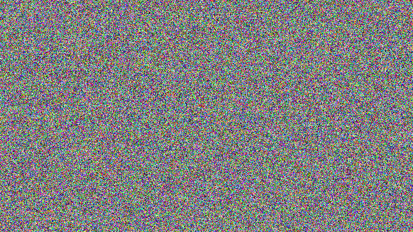
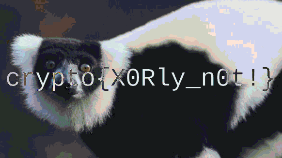
Nested Matryoshka extraction
The Matryoshka Doll challenge required repeatedly examining and extracting embedded content. Each stage revealed a smaller image, continuing until the hidden challenge material was reached.
The exact command sequence was not documented at the time, so this summary stays at the level supported by the retained evidence.
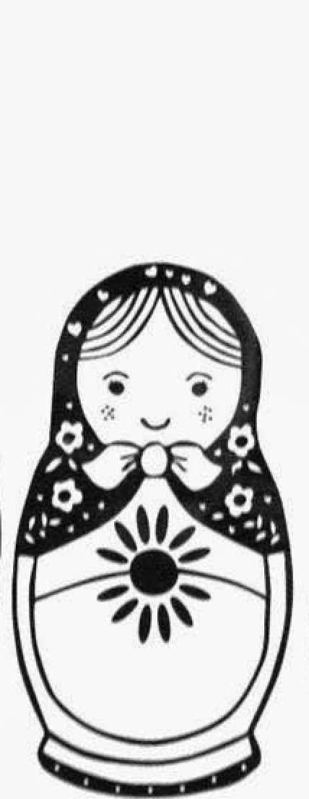
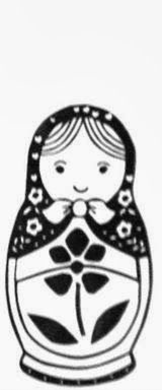
06
Cryptography
CryptoHack progress
Current evidence includes completed introductory exercises in encoding, byte representation, and XOR, with further cryptography material to be added as the page develops.
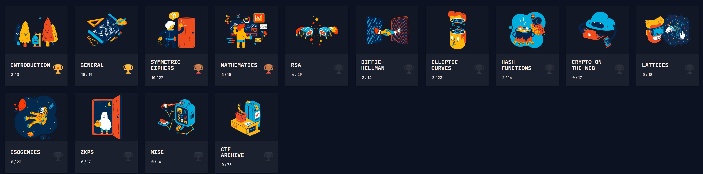
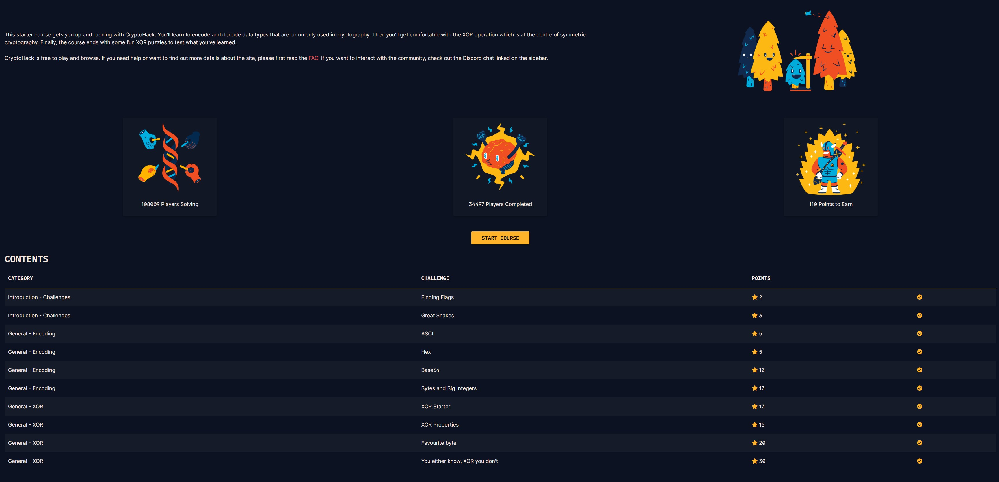
07
Technical coverage
A concise inventory of the areas represented by the work above.
Digital forensics
Disk images, artifacts, hashes, nested files, and evidence validation.
Network analysis
Wireshark, tshark, PCAPs, TCP/IP, HTTP, FTP, DNS, and Kerberos.
Offensive fundamentals
SQL injection, buffer overflows, password cracking, and privilege concepts.
Security frameworks
MITRE ATT&CK mapping and scenario-based defensive analysis.
Linux systems
Command-line investigation, permissions, filesystems, and constrained shells.
Cryptography
Encoding, XOR, hashes, symmetric ciphers, and continuing public-key study.